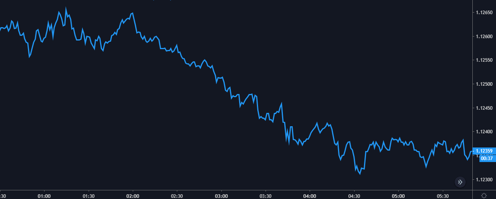
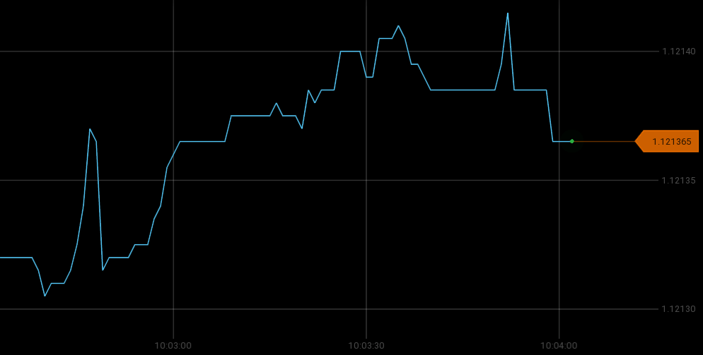
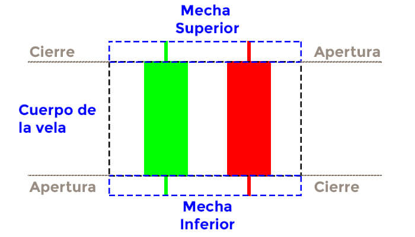
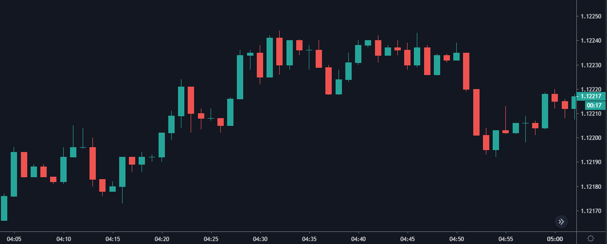
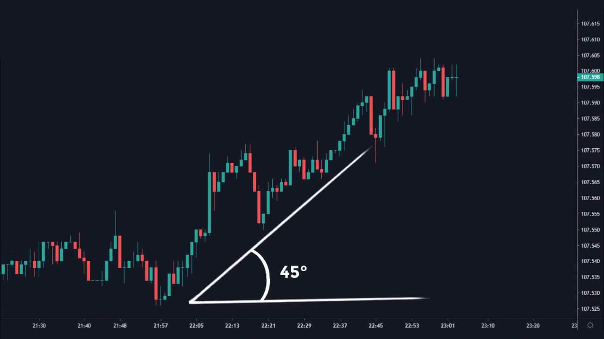
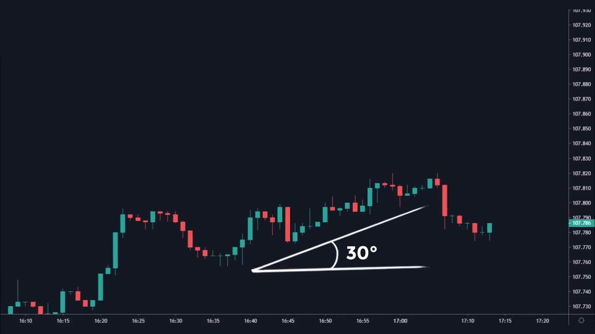
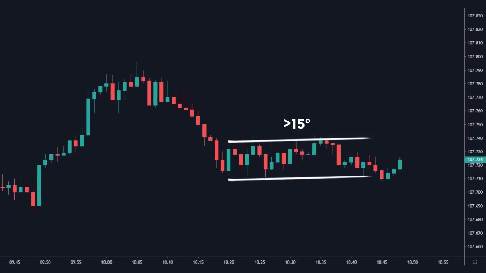
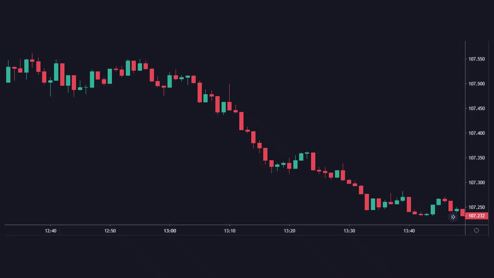
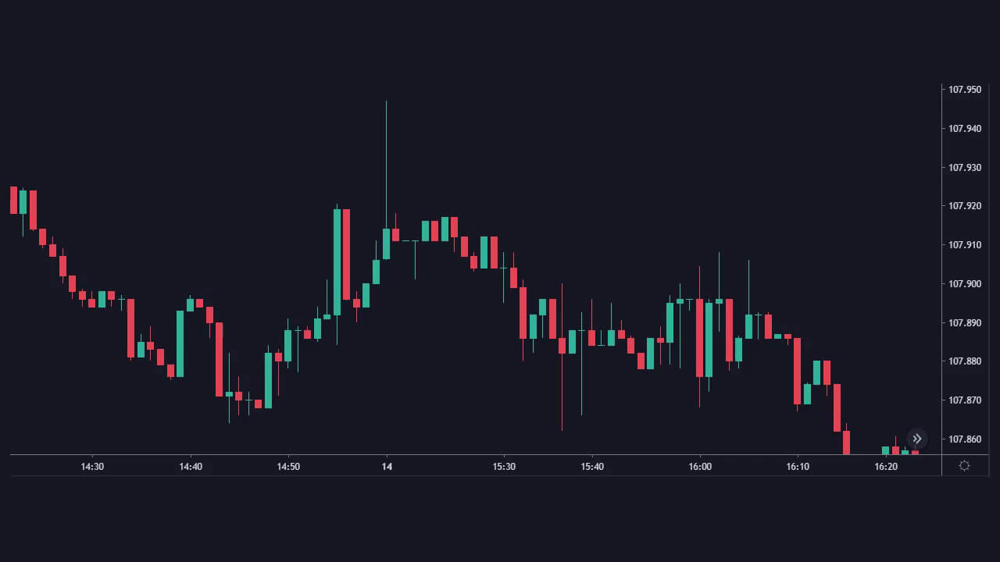

El Gráfico -Entendiendo nuestra área de Trabajo
Algo a lo cual muy pocos traders le prestan la atención debida al inicio de su formación es a su área de trabajo, ahora no hablo del área de trabajo física, sino al área de trabajo virtual
Cada broker nos ofrece una plataforma para que podamos realizar nuestro análisis técnico, en esta plataforma nosotros veremos los gráficos.
Hay una gran cantidad de plataformas por lo que se hablara de manera general, ya que ahora tampoco profundizaremos en las herramientas que estas plataformas nos brindan (por ejemplo trazar líneas).
En este momento estudiaremos la información que el precio nos deja en el gráfico.
Par de Divisas
Un par de divisas está compuesta por dos divisas, cada una de ellas modificada mediante un código de letras que hacen referencia al país u organización donde la divisa es utilizada. La última letra hace referencia al nombre de la divisa.
Aquí algunos ejemplos:
- USD – United States Dollar (Estados Unidos, dólar americano)
- EUR – European Union euRo (Unión Europea, el euro, como se ve es una excepción)
- GBP – Great Britain Pound (Gran Bretaña, libra esterlina)
En el par de divisas podemos encontrar en primera posición la moneda base y en segunda posición la moneda cotizada
Ejemplo:
EUR / USD Donde EUR es la moneda base y USD es la moneda cotizada.
Acá sabremos cuantos dolares (moneda cotizada) necesitamos para comprar 1 Euro (moneda base). Si el EUR/USD tiene un valor de 1.1250 , significa que necesitamos $1.1250 de dolares para comprar 1 Euro.
¿Qué es un Pip?
Su significado en inglés es “point in porcentaje” o punto porcentual. Es la medida del movimiento más pequeño que puede llegar a tener un par de divisas.
La mayoría de pares de divisas tienen 4 decimales, a excepción de los pares basados en el Yen Japonés donde la variación se mide con 2 decimales.
EUR/USD
1.1250-1.1251
Este movimiento de 0.0001 es una variación de 1 pip.
EUR/JPY
120.10 – 120.11
Este movimiento de 0.01 es una variación de 1 pip.
También se pueden encontrar cotizaciones con 5 decimales y 3 respectivamente, este último decimal mide la variación del precio en fracciones de pips. Denominados Pipettes .
EUR/USD
1.12500 – 1.12501
Este movimiento de 0.00001 es una Variación de 1 Pipette.
EUR/JPY
120.100 – 120.101
Este movimiento de 0.001 es una variación de 1 Pipette.
Gráfico de Líneas
El gráfico de líneas nos muestra los movimientos del precio según la temporalidad elegida. Si eliges un tiempo de 1 minuto el gráfico de líneas te mostrará los movimientos que ha presentado el precio cada minuto, uniendo mediante líneas los puntos de los movimientos.

Cuando inicia un nuevo minuto el gráfico avanza y podemos ver el desplazamiento vertical del precio dependiendo de los movimientos que este realice, al finalizar el minuto el gráfico imprime el ultimo movimiento del precio y luego avanza.
También podemos encontrarnos con gráficos que imprimen los movimientos cada segundo, esto dependiendo del broker y la plataforma.

Gráfico de Velas Japonesas
Más adelante profundizaremos en el tema de velas japonesas, ahora veremos una introducción.
Las velas Japonesas surgen en Japón en el siglo XVIII en el mercado de arroz. Las velas japonesas nos muestran en el gráfico los movimientos del precio y nos permite realizar un análisis técnico.
Muchos traders prefieren utilizar las velas japonesas para su análisis técnico ya que estas nos brindan mayor información y son más atractivas visualmente.
Las velas japonesas muestran los movimientos que ha tenido el precio durante un lapso de tiempo, este lapso o intervalo de tiempo se llama TIMEFRAME o Temporalidad.
Por ejemplo, si estamos en un timeframe de 1 minuto, la nueva vela abrirá en el segundo 00 y cerrará en el segundo 59.
Las velas japonesas están conformadas de la siguiente manera:

Apertura de la vela: Nos indica donde se encontraba el precio al momento de iniciar el intervalo de tiempo.
Cierre de la vela: Nos indica donde se encontraba el precio al momento de finalizar el intervalo de tiempo.
Cuerpo de la vela: Comprendido entre los puntos de apertura y cierre de la vela.
Mecha superior e inferior: El punto puede sobrepasar los puntos de cierre y apertura de la vela, las mechas nos muestran estos puntos más altos y más bajos que pudo alcanzar el precio durante el intervalo de tiempo.
Si el precio de cierre es superior al precio de apertura la vela es alcista, dependiendo de la plataforma o la configuración que tengas así sera el color de la vela, por defecto suele ser verde o blanco.
Si el precio de cierre es inferior al precio de apertura la vela será bajista, dependiendo de la plataforma o la configuración que tengas así sera el color de la vela, por defecto suele ser roja o negra.

Tendencias
Dependiendo de los movimientos del precio podemos identificar 3 tipos de tendencias.
Tendencia Alcista
Decimos que es una tendencia alcista cuando el precio a subido. En tendencias generales podemos ver que el precio se mueve creando máximos y mínimos más altos.

Tendencia Bajista
Decimos que es una tendencia bajista cuando el precio a bajado. En tendencias generales podemos ver que el precio se mueve creando máximos y mínimos más bajos.

Consolidación / Lateralización
Decimos que es una lateralización cuando el precio se esta moviendo de manera horizontal y los máximos y mínimos los crea al mismo nivel.

Estos tres tipos de tendencias se pueden dar en tendencias generales y tendencias secundarias.
Tendencias generales o primarias
Estas tendencias están vistas desde «lejos», y cómo su nombre lo indica nos muestra la información general del mercado (tipo de tendencia).
Tendencia Secundaria
Las tendencias generales están compuestas de tendencias secundarias, es decir son movimientos más pequeños del precio.

Fuerza de las Tendencias
En cada análisis que hacemos debemos tener en cuenta con que fuerza se esta moviendo el precio.
Podemos determinar la fuerza del precio observando los ángulos de inclinación de las tendencias.
Esto solo es un aproximado, no es algo que tengas que medir con regla ni debe de quedar exactamente en el valor indicado.
Tendencia Fuerte:
Podemos identificar las tendencias fuertes cuando presentan un ángulo entre los 60°.

Tendencia Saludable:
Podemos identificar las tendencias saludables cuando presentan un ángulo entre los 45°.

Tendencias Débiles:
Podemos identificar las tendencias débiles cuando presentan un ángulo entre los 30-15°.

Si el ángulo es inferior a los 15° decimos que estamos en una consolidación

La fuerza se puede observar de la misma manera independientemente del si la tendencia es bajista o alcista. También puedes ver la fuerza que presentan las tendencias generales y las tendencias secundarias.
Volatilidad
La volatilidad es algo a lo que pocos traders le prestan atención. Es nuestro trabajo identificar en que tipo de volatilidad podemos hacer análisis más cómodos.
Para motivos del curso explicaremos el termino de volatilidad de la siguiente manera: La volatilidad es la frecuencia de cambio que ha experimentado el precio a lo largo de un intervalo dado.
Podremos identificar 3 tipos de volatilidad.
Volatilidad Débil:
En este tipo de volatilidad el precio se mueve muy poco. Podemos identificarlo porque los cuerpos de las velas son muy pequeños. Este tipo de volatilidad puede llegar a ser engañosa ya que con sus pocos movimientos se nos dificulta ver la reacción del precio con las zonas importantes.

Volatilidad Saludable:
Este tipo de volatilidad nos presenta movimientos más tranquilos, se facilita hacer el seguimiento del precio en zonas importantes. Todas las velas mantienen un tamaño promedio y no presenta demasiadas mechas.

Volatilidad Alta:
Este tipo de volatilidad presenta movimientos rápidos e indecisos. Este tipo de mercado puede ser engañoso puesto que con los movimientos que presenta se dificulta ver la reacción del precio con las zonas importantes, también nos puede dejar un mal punto de entrada a causa de sus movimientos rápidos.

La volatilidad saludable es la más recomendada para operar gracias a los movimientos que presenta y la estructura que nos deja.
Esto no quiere decir que debemos temerle a la volatilidad alta o baja. Todos se pueden operar solo que necesitas tener más paciencia de lo normal o ser un trader más experimentado.
A continuación encontrarás las actividades correspondientes a esta clase.
Preguntas:
- ¿Qué es una divisa?
- ¿Qué es un par de divisas y cómo está conformada?
- ¿Qué es un Pip y una Pipette?
- ¿Qué es la volatilidad?
- ¿Qué tipos de volatilidad podríamos encontrar y cómo los identificas?
- Define que es una tendencia alcista, tendencia bajista y una consolidación.
- ¿Cómo identificas una tendencia fuerte?
- ¿Cómo identificas una tendencia saludable?
- ¿Cómo identificas una tendencia débil?
- Anota las conclusiones de lo aprendido.
Si no sabes cual es la respuesta a alguna de las preguntas puedes investigar en otras fuentes, recuerda que es tu responsabilidad buscar información adicional o hacer las preguntas correspondientes.
Actividad #2
Para esta actividad debes buscar en tu gráfico e identificar:
- Una tendencia Fuerte.
- Una tendencia Débil.
- Una tendencia Saludable.
- Tendencia General y Secundaria.
Puedes compartir las capturas de pantalla en el salón virtual, agregando #Actividad2 en la descripción y colocándole la etiqueta de tema “Tendencias”, en total serían 4 capturas, una por cada inciso.
En las próximas clases explicaré porque es importante identificar la fuerza de las tendencias.
¡Gracias!